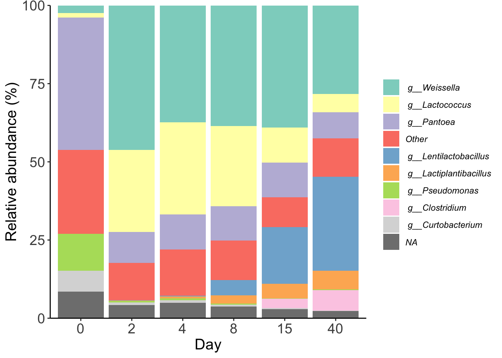

Code
setwd("~/Documents/github/coding_club/")
pacman::p_load(tidyverse,
patchwork,
ggtext)setwd("~/Documents/github/coding_club/")
pacman::p_load(tidyverse,
patchwork,
ggtext)You can add options to executable code like this
counts <- read_tsv("raw_data/feature-table_ampli.tsv")
taxonomy <- read_tsv("raw_data/taxonomy_ampli.tsv")taxonomy <- read_tsv("raw_data/taxonomy_ampli.tsv") %>%
rename(OTUID='Feature ID') %>%
separate(Taxon,
into=c("superkingdom", "phylum", "class", "order", "family", "genus", "species"),
sep = ";")
head(taxonomy)# A tibble: 6 × 9
OTUID super…¹ phylum class order family genus species Confi…²
<chr> <chr> <chr> <chr> <chr> <chr> <chr> <chr> <dbl>
1 b7baa37944fb48185b3cc… d__Bac… " p__… " c_… " o_… " f__… " g_… " s__W… 1.00
2 a82a5a7c35c28c40ed5a3… d__Bac… " p__… " c_… " o_… " f__… " g_… " s__L… 0.956
3 1bfdaa567ac92f2e89705… d__Bac… " p__… " c_… " o_… " f__… " g_… <NA> 0.999
4 e28bc9caeabd276628e70… d__Bac… " p__… " c_… " o_… " f__… " g_… <NA> 0.997
5 97b761526814e975f8e72… d__Bac… " p__… " c_… " o_… " f__… " g_… " s__W… 0.943
6 ae218b0c831c009018603… d__Bac… " p__… " c_… " o_… " f__… " g_… " s__L… 0.957
# … with abbreviated variable names ¹superkingdom, ²Confidencebar_colors <- c('#8dd3c7','#ffffb3','#bebada','#fb8072','#80b1d3','#fdb462',
'#b3de69','#fccde5','#d9d9d9','#bc80bd')
mean_rel <- counts %>%
pivot_longer(-OTUID,
names_to = "sample",
values_to = "counts") %>%
mutate(day=str_replace_all(sample, "[ABCT]", "")) %>%
inner_join(taxonomy, by="OTUID") %>%
group_by(sample, day, genus) %>%
summarise(counts=sum(counts),
.groups = "drop") %>%
group_by(sample) %>%
mutate(rel_abund = 100*(counts/sum(counts))) %>%
group_by(day, genus) %>%
summarise(mean_rel =mean(rel_abund),
.groups = "drop")
taxon_pool <- mean_rel %>%
group_by(genus) %>%
summarise(pool = max(mean_rel) < 5,
mean=mean(mean_rel),
.groups = "drop")
inner_join(taxon_pool, mean_rel, by="genus") %>%
mutate(genus=if_else(pool, "Other", genus)) %>%
group_by(day, genus) %>%
summarise(mean_rel=sum(mean_rel),
mean =sum(mean),
.groups ="drop") %>%
mutate(genus=str_replace(genus,
"_sensu_stricto_12", ""),
genus=factor(genus),
genus=fct_reorder(genus, mean,
.desc = TRUE)) %>%
#filter(grepl('Lactococcus', taxon)) %>%
#filter(taxon!="Other",
#taxon!="Unclassified") %>%
ggplot(aes(x=factor(day,
levels = c(0,2,4,8,15,40)),
y=mean_rel,
fill=genus)) +
geom_col() +
scale_y_continuous(expand = c(0,0)) +
scale_fill_manual(values=bar_colors) +
labs(x="Day",
y="Relative abundance (%)") +
theme_classic() +
theme(legend.title = element_blank(),
legend.text = element_text(face = "italic"),
axis.text = element_text(size = 14),
axis.title = element_text(size = 15))